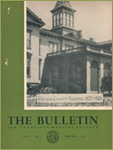
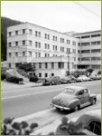
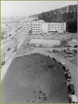
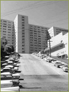
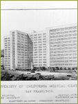
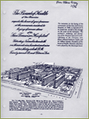
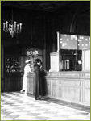
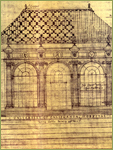

---
---
<!DOCTYPE html PUBLIC "-//W3C//DTD XHTML 1.0 Transitional//EN" "http://www.w3.org/TR/xhtml1/DTD/xhtml1-transitional.dtd">
<html xmlns="http://www.w3.org/1999/xhtml">
<head>
<meta http-equiv="Content-Type" content="text/html; charset=UTF-8" />
<title>Photos - Architecture - Hospitals - A History of UCSF</title>
<link href="ucsf_history.css" rel="stylesheet" type="text/css" media="all" />
<style type="text/css">
<!--
body {
	margin: 0px;
	background-color: #E6E6E6;
	background-image: url();
}
a:link {
	text-decoration: none;
}
a:visited {
	text-decoration: none;
}
a:hover {
	text-decoration: none;
}
a:active {
	text-decoration: none;
}
-->
</style>

</head>

<body onload="document.forms['cse-search-box'].elements['q'].focus();">
{% include google_analytics.html %}
<div id="mainbody">
{% include ucsf_banner.html %}
<div id="rotator" class="v2"><a href="index.html" id="rotator_home_link"></a></div>
<div id="insidebody">
<div id="photocopy">
  <div id="photocopy_text">
    <div id="subhead">ARCHITECTURE</div>
<a href="architecture.html" class="bodylink">Parnassus Campus</a><a href="architecture_colleges.html" class="bodylink"><br />
Affiliated Colleges</a><br/>
    <a href="architecture_dentistry.html" class="bodylink"> Dentistry<br />
    </a><a href="architecture_medicine.html" class="bodylink">Medicine</a><br />
    <a href="architecture_nursing.html" class="bodylink">Nursing</a><br/>
    <a href="architecture_pharmacy.html" class="bodylink"> Pharmacy</a><br />
    Hospitals<br/>
  <br />
<div id="subhead2">Hospitals</div>
<div id="photo_thumb_holder"><div id="photo_thumb"><a href="1899_photo9.html"></a><div id="photo_caption">City and County Hospital</div>
</div>
<div id="photo_thumb"><a href="1919_photo16.html"></a><div id="photo_caption">Clinics building, 1930s</div>
</div>
<div id="photo_thumb"><a href="1940_photo.html"></a><div id="photo_caption">Langley Porter Clinic, c.1942</div>
</div>
</div>
<div id="photo_thumb_holder"><div id="photo_thumb"><a href="building_photo11.html"></a><div id="photo_caption">Moffitt Hospital construction site</div>
</div>
<div id="photo_thumb"><a href="1940_photo10.html"></a><div id="photo_caption">Moffitt Hospital under construction</div>
</div>
<div id="photo_thumb"><a href="1940_photo19.html"></a><div id="photo_caption">Moffitt Hospital under construction, 1951</div>
</div></div>
<div id="photo_thumb_holder"><div id="photo_thumb"><a href="building_photo7.html"></a><div id="photo_caption">Moffitt Hospital, 1950s</div>
</div>
<div id="photo_thumb"><a href="building_photo10.html"></a><div id="photo_caption">Moffitt Hospital, 1950s</div>
</div>
<div id="photo_thumb"><a href="1940_photo2.html"></a><div id="photo_caption">Moffitt Hospital, architect's drawing</div>
</div></div>
<div id="photo_thumb_holder"><div id="photo_thumb"><a href="building_photo5.html"></a><div id="photo_caption">San Francisco General Hospital, plans</div>
</div>
<div id="photo_thumb"><a href="theme_photo11.html"></a><div id="photo_caption">UC Hospital construction, 1916</div>
</div>
<div id="photo_thumb"><a href="building_photo6.html"></a><div id="photo_caption">UC Hospital lobby, c1918</div>
</div>
</div>
<div id="photo_thumb_holder"><div id="photo_thumb"><a href="building_photo4.html"></a><div id="photo_caption">UC Hospital, 1920s</div>
</div>
<div id="photo_thumb"><a href="1940_photo17.html"></a><div id="photo_caption">UC Hospital, 1952</div>
</div>
<div id="photo_thumb"><a href="1899_photo22.html"></a><div id="photo_caption">UC Hospital, architect's drawing</div>
</div>
</div>
<div id="photo_thumb_holder"><div id="photo_thumb"><a href="1868_photo8.html"></a><div id="photo_caption">US Marine Hospital</div>
</div>
<div id="photo_thumb"><a href="1959_photo7.html"></a><div id="photo_caption">Ambulatory Care Center, 1974 </div>
</div>
<div id="photo_thumb"><a href="1959_photo10.html"></a><div id="photo_caption">Mt. Zion Hospital</div>
</div>
</div>
<div id="photo_thumb_holder">
<div id="photo_thumb"><a href="theme_photo17.html"></a>
  <div id="photo_caption">UC Hospital, early plan</div>
</div>
</div>
</div>
</div>
<div id="sidebar">
<div id="sidenav_inside">{% include search_include.html %}<br />
    <div id="sidenavtype">
  <a href="story.html" class="sidenavtype"><strong>THE STORY</strong></a><br/>
  <br/>
  <a href="special_topics.html" class="sidenavtype"><strong>SPECIAL TOPICS</strong></a><br/><br/>
  <a href="people.html" class="sidenavtype"><strong>PEOPLE</strong></a><br/>
  <br/>
  <div id="sidenav_subnav_header"><strong><a href="photos.html" class="sidenav_subnav_type_visited">PHOTOS</a></strong></div>
    <div id="sidenav_subnav">
      <div id="sidenav_subnav_links">
      <strong><a href="portraits.html" class="sidenav_subnav_type">Portraits</a></strong><br />
        <br />
        <strong><a href="architecture.html" class="sidenav_subnav_type_visited">Architecture</a></strong><br />
        <br />
        <strong><a href="healthcare.html" class="sidenav_subnav_type">Healthcare, Research & Teaching</a></strong><br />
        <br />
        <strong><a href="cal_history.html" class="sidenav_subnav_type">California History</a></strong></div>
    </div>  <br/>  <a href="buildings.html" class="sidenavtype"><strong>BUILDINGS</strong></a><br/>
  <br/>
  <a href="index.html" class="sidenavtype"><strong>HOME</strong></a></div>
</div>
</div>
</div>
<br class="clearit" />
{% include footer.html %}
</div>
</body>
</html>
